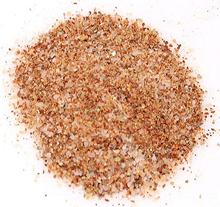

 |
Cajun Seasoning #1USA South | ||||
| Makes: Effort: Sched: DoAhead: |
4 oz * 8 min Yes |
This is a table condiment and light seasoning version of Cajun Seasoning. For a powerful cooking and rubbing version see Cajun Seasoning #2. | |||
|
2 ----- 2 1 1 1 1 1 1 1 ----- |
T --- T T T T T t t t --- |
Salt, granular -- Grind Paprika Cayenne Pepper Black Peppercorns Onion Powder Garlic Powder Thyme, dry Bay Leaf Chili Powder (1) ---------- |
There is no standard formula, but this one is typical for table condiment and general seasoning. Make - (8 min)
|